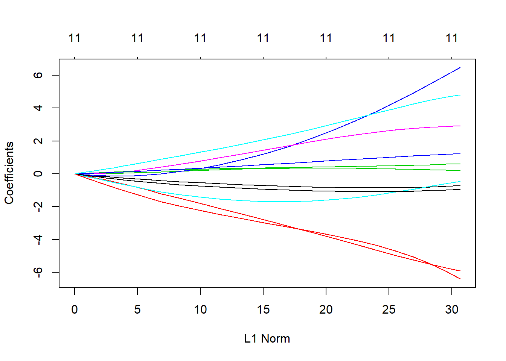

##
## WW.LR.pred 0 1
## 0 155 71
## 1 171 583## [1] 0.7530612##
## LR.pred2 0 1
## 0 156 75
## 1 170 579## [1] 0.75##
## LR.pred3 0 1
## 0 154 70
## 1 172 584## [1] 0.7530612##
## LR.pred4 0 1
## 0 156 75
## 1 170 579## [1] 0.75
## 12 x 100 sparse Matrix of class "dgCMatrix"
##
## (Intercept) 6.864173e-01 6.864173e-01 6.864173e-01 6.864173e-01
## fixed.acidity -5.220495e-11 -6.901187e-11 -9.122963e-11 -1.206002e-10
## volatile.acidity -1.076756e-10 -1.423407e-10 -1.881661e-10 -2.487445e-10
## citric.acid -4.534858e-13 -5.994816e-13 -7.924793e-13 -1.047611e-12
## residual.sugar -5.627692e-11 -7.439477e-11 -9.834551e-11 -1.300070e-10
## chlorides -1.339108e-10 -1.770222e-10 -2.340129e-10 -3.093513e-10
## free.sulfur.dioxide -1.017994e-12 -1.345728e-12 -1.778973e-12 -2.351698e-12
## total.sulfur.dioxide -8.181525e-11 -1.081549e-10 -1.429745e-10 -1.890038e-10
## density -2.199363e-10 -2.907428e-10 -3.843449e-10 -5.080814e-10
## pH 2.877375e-11 3.803721e-11 5.028295e-11 6.647110e-11
## sulphates 1.844382e-11 2.438164e-11 3.223110e-11 4.260762e-11
## alcohol 9.113950e-11 1.204811e-10 1.592689e-10 2.105441e-10
##
## (Intercept) 6.864173e-01 6.864173e-01 6.864173e-01 6.864173e-01
## fixed.acidity -1.594264e-10 -2.107523e-10 -2.786021e-10 -3.682956e-10
## volatile.acidity -3.288256e-10 -4.346881e-10 -5.746320e-10 -7.596297e-10
## citric.acid -1.384880e-12 -1.830730e-12 -2.420117e-12 -3.199253e-12
## residual.sugar -1.718616e-10 -2.271909e-10 -3.003330e-10 -3.970225e-10
## chlorides -4.089442e-10 -5.406002e-10 -7.146417e-10 -9.447142e-10
## free.sulfur.dioxide -3.108806e-12 -4.109658e-12 -5.432727e-12 -7.181745e-12
## total.sulfur.dioxide -2.498519e-10 -3.302896e-10 -4.366234e-10 -5.771904e-10
## density -6.716537e-10 -8.878866e-10 -1.173734e-09 -1.551607e-09
## pH 8.787088e-11 1.161601e-10 1.535569e-10 2.029931e-10
## sulphates 5.632476e-11 7.445802e-11 9.842912e-11 1.301175e-10
## alcohol 2.783269e-10 3.679318e-10 4.863841e-10 6.429712e-10
##
## (Intercept) 6.864173e-01 6.864173e-01 6.864173e-01 6.864173e-01
## fixed.acidity -4.868651e-10 -6.436070e-10 -8.508106e-10 -1.124722e-09
## volatile.acidity -1.004186e-09 -1.327475e-09 -1.754843e-09 -2.319799e-09
## citric.acid -4.229224e-12 -5.590785e-12 -7.390688e-12 -9.770055e-12
## residual.sugar -5.248404e-10 -6.938081e-10 -9.171735e-10 -1.212449e-09
## chlorides -1.248857e-09 -1.650915e-09 -2.182412e-09 -2.885021e-09
## free.sulfur.dioxide -9.493844e-12 -1.255030e-11 -1.659076e-11 -2.193201e-11
## total.sulfur.dioxide -7.630118e-10 -1.008657e-09 -1.333385e-09 -1.762656e-09
## density -2.051133e-09 -2.711477e-09 -3.584414e-09 -4.738384e-09
## pH 2.683450e-10 3.547363e-10 4.689404e-10 6.199117e-10
## sulphates 1.720077e-10 2.273840e-10 3.005883e-10 3.973600e-10
## alcohol 8.499701e-10 1.123610e-09 1.485347e-09 1.963541e-09
##
## (Intercept) 6.864173e-01 6.864173e-01 6.864173e-01 6.864173e-01
## fixed.acidity -1.486816e-09 -1.965483e-09 -2.598253e-09 -3.434737e-09
## volatile.acidity -3.066638e-09 -4.053915e-09 -5.359038e-09 -7.084332e-09
## citric.acid -1.291544e-11 -1.707345e-11 -2.257009e-11 -2.983633e-11
## residual.sugar -1.602787e-09 -2.118790e-09 -2.800915e-09 -3.702645e-09
## chlorides -3.813828e-09 -5.041656e-09 -6.664772e-09 -8.810437e-09
## free.sulfur.dioxide -2.899282e-11 -3.832681e-11 -5.066578e-11 -6.697718e-11
## total.sulfur.dioxide -2.330128e-09 -3.080292e-09 -4.071964e-09 -5.382897e-09
## density -6.263865e-09 -8.280460e-09 -1.094628e-08 -1.447034e-08
## pH 8.194867e-10 1.083313e-09 1.432076e-09 1.893121e-09
## sulphates 5.252866e-10 6.943980e-10 9.179532e-10 1.213480e-09
## alcohol 2.595686e-09 3.431344e-09 4.536035e-09 5.996371e-09
##
## (Intercept) 6.864173e-01 6.864173e-01 6.864173e-01 6.864173e-01
## fixed.acidity -4.540520e-09 -6.002300e-09 -7.934688e-09 -1.048919e-08
## volatile.acidity -9.365070e-09 -1.238007e-08 -1.636573e-08 -2.163453e-08
## citric.acid -3.944187e-11 -5.213983e-11 -6.892578e-11 -9.111581e-11
## residual.sugar -4.894679e-09 -6.470478e-09 -8.553591e-09 -1.130734e-08
## chlorides -1.164688e-08 -1.539649e-08 -2.035325e-08 -2.690580e-08
## free.sulfur.dioxide -8.853988e-11 -1.170445e-10 -1.547259e-10 -2.045385e-10
## total.sulfur.dioxide -7.115873e-09 -9.406765e-09 -1.243519e-08 -1.643859e-08
## density -1.912894e-08 -2.528733e-08 -3.342836e-08 -4.419033e-08
## pH 2.502594e-09 3.308282e-09 4.373354e-09 5.781317e-09
## sulphates 1.604149e-09 2.120591e-09 2.803297e-09 3.705793e-09
## alcohol 7.926849e-09 1.047883e-08 1.385239e-08 1.831205e-08
##
## (Intercept) 6.864173e-01 6.864173e-01 6.864173e-01 6.864173e-01
## fixed.acidity -1.386609e-08 -1.833016e-08 -2.423139e-08 -3.203247e-08
## volatile.acidity -2.859957e-08 -3.780695e-08 -4.997856e-08 -6.606872e-08
## citric.acid -1.204497e-10 -1.592274e-10 -2.104892e-10 -2.782542e-10
## residual.sugar -1.494764e-08 -1.975990e-08 -2.612143e-08 -3.453099e-08
## chlorides -3.556788e-08 -4.701865e-08 -6.215589e-08 -8.216642e-08
## free.sulfur.dioxide -2.703878e-10 -3.574366e-10 -4.725100e-10 -6.246300e-10
## total.sulfur.dioxide -2.173085e-08 -2.872690e-08 -3.797527e-08 -5.020108e-08
## density -5.841701e-08 -7.722385e-08 -1.020854e-07 -1.349509e-07
## pH 7.642561e-09 1.010302e-08 1.335559e-08 1.765531e-08
## sulphates 4.898840e-09 6.475979e-09 8.560863e-09 1.131696e-08
## alcohol 2.420745e-08 3.200083e-08 4.230321e-08 5.592235e-08
##
## (Intercept) 6.864173e-01 6.864173e-01 6.864173e-01 6.864174e-01
## fixed.acidity -4.234504e-08 -5.597765e-08 -7.399916e-08 -9.782253e-08
## volatile.acidity -8.733896e-08 -1.154570e-07 -1.526273e-07 -2.017643e-07
## citric.acid -3.678355e-10 -4.862565e-10 -6.428018e-10 -8.497450e-10
## residual.sugar -4.564794e-08 -6.034389e-08 -7.977106e-08 -1.054526e-07
## chlorides -1.086192e-07 -1.435882e-07 -1.898151e-07 -2.509244e-07
## free.sulfur.dioxide -8.257235e-10 -1.091557e-09 -1.442972e-09 -1.907520e-09
## total.sulfur.dioxide -6.636287e-08 -8.772780e-08 -1.159710e-07 -1.533068e-07
## density -1.783971e-07 -2.358305e-07 -3.117540e-07 -4.121204e-07
## pH 2.333928e-08 3.085315e-08 4.078605e-08 5.391675e-08
## sulphates 1.496035e-08 1.977670e-08 2.614364e-08 3.456035e-08
## alcohol 7.392606e-08 9.772590e-08 1.291879e-07 1.707788e-07
##
## (Intercept) 6.864174e-01 6.864174e-01 6.864175e-01 6.864176e-01
## fixed.acidity -1.293156e-07 -1.709476e-07 -2.259827e-07 -2.987358e-07
## volatile.acidity -2.667205e-07 -3.525889e-07 -4.661017e-07 -6.161590e-07
## citric.acid -1.123311e-09 -1.484947e-09 -1.963007e-09 -2.594969e-09
## residual.sugar -1.394022e-07 -1.842815e-07 -2.436092e-07 -3.220370e-07
## chlorides -3.317072e-07 -4.384974e-07 -5.796678e-07 -7.662866e-07
## free.sulfur.dioxide -2.521623e-09 -3.333427e-09 -4.406575e-09 -5.825201e-09
## total.sulfur.dioxide -2.026626e-07 -2.679080e-07 -3.541586e-07 -4.681768e-07
## density -5.447989e-07 -7.201921e-07 -9.520515e-07 -1.258556e-06
## pH 7.127477e-08 9.422104e-08 1.245547e-07 1.646539e-07
## sulphates 4.568675e-08 6.039519e-08 7.983889e-08 1.055423e-07
## alcohol 2.257595e-07 2.984407e-07 3.945211e-07 5.215336e-07
##
## (Intercept) 6.864177e-01 6.864178e-01 6.864180e-01 6.864182e-01
## fixed.acidity -3.949111e-07 -5.220492e-07 -6.901182e-07 -9.122954e-07
## volatile.acidity -8.145259e-07 -1.076755e-06 -1.423407e-06 -1.881660e-06
## citric.acid -3.430378e-09 -4.534726e-09 -5.994585e-09 -7.924390e-09
## residual.sugar -4.257139e-07 -5.627685e-07 -7.439466e-07 -9.834531e-07
## chlorides -1.012986e-06 -1.339107e-06 -1.770221e-06 -2.340127e-06
## free.sulfur.dioxide -7.700515e-09 -1.017953e-08 -1.345656e-08 -1.778848e-08
## total.sulfur.dioxide -6.189020e-07 -8.181520e-07 -1.081548e-06 -1.429743e-06
## density -1.663737e-06 -2.199362e-06 -2.907426e-06 -3.843445e-06
## pH 2.176628e-07 2.877373e-07 3.803717e-07 5.028289e-07
## sulphates 1.395207e-07 1.844382e-07 2.438164e-07 3.223109e-07
## alcohol 6.894367e-07 9.113946e-07 1.204810e-06 1.592687e-06
##
## (Intercept) 6.864185e-01 6.864189e-01 6.864195e-01 6.864202e-01
## fixed.acidity -1.206000e-06 -1.594261e-06 -2.107518e-06 -2.786013e-06
## volatile.acidity -2.487444e-06 -3.288253e-06 -4.346876e-06 -5.746313e-06
## citric.acid -1.047541e-08 -1.384757e-08 -1.830515e-08 -2.419742e-08
## residual.sugar -1.300066e-06 -1.718609e-06 -2.271898e-06 -3.003311e-06
## chlorides -3.093510e-06 -4.089436e-06 -5.405992e-06 -7.146398e-06
## free.sulfur.dioxide -2.351479e-08 -3.108424e-08 -4.108991e-08 -5.431559e-08
## total.sulfur.dioxide -1.890035e-06 -2.498514e-06 -3.302887e-06 -4.366218e-06
## density -5.080807e-06 -6.716524e-06 -8.878844e-06 -1.173730e-05
## pH 6.647100e-07 8.787071e-07 1.161598e-06 1.535564e-06
## sulphates 4.260760e-07 5.632474e-07 7.445798e-07 9.842906e-07
## alcohol 2.105439e-06 2.783265e-06 3.679311e-06 4.863829e-06
##
## (Intercept) 6.864211e-01 6.864224e-01 6.864240e-01 6.864262e-01
## fixed.acidity -3.682941e-06 -4.868626e-06 -6.436026e-06 -8.508029e-06
## volatile.acidity -7.596285e-06 -1.004184e-05 -1.327471e-05 -1.754836e-05
## citric.acid -3.198596e-08 -4.228076e-08 -5.588780e-08 -7.387185e-08
## residual.sugar -3.970192e-06 -5.248346e-06 -6.937980e-06 -9.171558e-06
## chlorides -9.447110e-06 -1.248851e-05 -1.650905e-05 -2.182395e-05
## free.sulfur.dioxide -7.179705e-08 -9.490279e-08 -1.254407e-07 -1.657988e-07
## total.sulfur.dioxide -5.771877e-06 -7.630071e-06 -1.008648e-05 -1.333370e-05
## density -1.551600e-05 -2.051121e-05 -2.711457e-05 -3.584378e-05
## pH 2.029922e-06 2.683434e-06 3.547336e-06 4.689358e-06
## sulphates 1.301174e-06 1.720075e-06 2.273837e-06 3.005878e-06
## alcohol 6.429691e-06 8.499665e-06 1.123604e-05 1.485336e-05
##
## (Intercept) 6.864291e-01 6.864329e-01 6.864380e-01 6.864446e-01
## fixed.acidity -1.124708e-05 -1.486792e-05 -1.965442e-05 -2.598181e-05
## volatile.acidity -2.319788e-05 -3.066618e-05 -4.053879e-05 -5.358975e-05
## citric.acid -9.763932e-08 -1.290474e-07 -1.705475e-07 -2.253742e-07
## residual.sugar -1.212418e-05 -1.602733e-05 -2.118695e-05 -2.800750e-05
## chlorides -2.884991e-05 -3.813775e-05 -5.041564e-05 -6.664612e-05
## free.sulfur.dioxide -2.191299e-07 -2.895958e-07 -3.826872e-07 -5.056427e-07
## total.sulfur.dioxide -1.762631e-05 -2.330084e-05 -3.080215e-05 -4.071831e-05
## density -4.738321e-05 -6.263755e-05 -8.280268e-05 -1.094595e-04
## pH 6.199035e-06 8.194725e-06 1.083288e-05 1.432033e-05
## sulphates 3.973591e-06 5.252849e-06 6.943951e-06 9.179482e-06
## alcohol 1.963522e-05 2.595652e-05 3.431285e-05 4.535932e-05
##
## (Intercept) 6.864534e-01 6.864651e-01 6.864805e-01 6.865008e-01
## fixed.acidity -3.434611e-05 -4.540301e-05 -6.001917e-05 -7.934018e-05
## volatile.acidity -7.084222e-05 -9.364878e-05 -1.237974e-04 -1.636514e-04
## citric.acid -2.977923e-07 -3.934209e-07 -5.196546e-07 -6.862107e-07
## residual.sugar -3.702356e-05 -4.894174e-05 -6.469595e-05 -8.552048e-05
## chlorides -8.810157e-05 -1.164639e-04 -1.539564e-04 -2.035176e-04
## free.sulfur.dioxide -6.679978e-07 -8.822989e-07 -1.165028e-06 -1.537793e-06
## total.sulfur.dioxide -5.382663e-05 -7.115465e-05 -9.406052e-05 -1.243394e-04
## density -1.446975e-04 -1.912791e-04 -2.528554e-04 -3.342523e-04
## pH 1.893044e-05 2.502461e-05 3.308049e-05 4.372948e-05
## sulphates 1.213471e-05 1.604134e-05 2.120564e-05 2.803250e-05
## alcohol 5.996191e-05 7.926536e-05 1.047828e-04 1.385144e-04
##
## (Intercept) 6.865277e-01 6.865633e-01 6.866102e-01 6.866723e-01
## fixed.acidity -1.048802e-04 -1.386405e-04 -1.832658e-04 -2.422514e-04
## volatile.acidity -2.163350e-04 -2.859778e-04 -3.780382e-04 -4.997310e-04
## citric.acid -9.058334e-07 -1.195193e-06 -1.576015e-06 -2.076481e-06
## residual.sugar -1.130465e-04 -1.494293e-04 -1.975167e-04 -2.610704e-04
## chlorides -2.690320e-04 -3.556333e-04 -4.701070e-04 -6.214199e-04
## free.sulfur.dioxide -2.028843e-06 -2.674972e-06 -3.523856e-06 -4.636839e-06
## total.sulfur.dioxide -1.643641e-04 -2.172704e-04 -2.872025e-04 -3.796365e-04
## density -4.418485e-04 -5.840744e-04 -7.720713e-04 -1.020562e-03
## pH 5.780606e-05 7.641319e-05 1.010085e-04 1.335180e-04
## sulphates 3.705711e-05 4.898697e-05 6.475728e-05 8.560424e-05
## alcohol 1.831038e-04 2.420453e-04 3.199572e-04 4.229428e-04
##
## (Intercept) 6.867544e-01 6.868629e-01 6.870063e-01 6.871957e-01
## fixed.acidity -3.202156e-04 -4.232597e-04 -5.594433e-04 -7.394095e-04
## volatile.acidity -6.605917e-04 -8.732228e-04 -1.154278e-03 -1.525764e-03
## citric.acid -2.732899e-06 -3.591615e-06 -4.711015e-06 -6.163249e-06
## residual.sugar -3.450585e-04 -4.560401e-04 -6.026713e-04 -7.963696e-04
## chlorides -8.214215e-04 -1.085768e-03 -1.435140e-03 -1.896856e-03
## free.sulfur.dioxide -6.092079e-06 -7.987770e-06 -1.044476e-05 -1.360719e-05
## total.sulfur.dioxide -5.018076e-04 -6.632737e-04 -8.766579e-04 -1.158626e-03
## density -1.348998e-03 -1.783079e-03 -2.356746e-03 -3.114817e-03
## pH 1.764868e-04 2.332770e-04 3.083292e-04 4.075070e-04
## sulphates 1.131619e-04 1.495901e-04 1.977436e-04 2.613955e-04
## alcohol 5.590675e-04 7.389880e-04 9.767826e-04 1.291047e-03
##
## (Intercept) 6.874459e-01 0.6877765190 6.882131e-01 6.887894e-01
## fixed.acidity -9.772083e-04 -0.0012913795 -1.706373e-03 -2.254406e-03
## volatile.acidity -2.016753e-03 -0.0026656503 -3.523171e-03 -4.656269e-03
## citric.acid -8.034921e-06 -0.0000104252 -1.343849e-05 -1.716631e-05
## residual.sugar -1.052184e-03 -0.0013899290 -1.835665e-03 -2.423606e-03
## chlorides -2.506981e-03 -0.0033131190 -4.378068e-03 -5.784614e-03
## free.sulfur.dioxide -1.763832e-05 -0.0000227064 -2.895094e-05 -3.641194e-05
## total.sulfur.dioxide -1.531175e-03 -0.0020233190 -2.673304e-03 -3.531498e-03
## density -4.116448e-03 -0.0054396799 -7.187407e-03 -9.495167e-03
## pH 5.385500e-04 0.0007116689 9.403261e-04 1.242256e-03
## sulphates 3.455320e-04 0.0004567425 6.037334e-04 7.980068e-04
## alcohol 1.706334e-03 0.0022550548 2.979971e-03 3.937462e-03
##
## (Intercept) 6.895499e-01 6.905528e-01 6.918745e-01 6.935971e-01
## fixed.acidity -2.977892e-03 -3.932584e-03 -5.191647e-03 -6.841291e-03
## volatile.acidity -6.153295e-03 -8.130769e-03 -1.074224e-02 -1.418897e-02
## citric.acid -2.164877e-05 -2.679834e-05 -3.225560e-05 -2.930517e-05
## residual.sugar -3.198567e-03 -4.219077e-03 -5.561261e-03 -7.295317e-03
## chlorides -7.641796e-03 -1.009306e-02 -1.332684e-02 -1.757329e-02
## free.sulfur.dioxide -4.489101e-05 -5.368930e-05 -6.112592e-05 -4.318151e-05
## total.sulfur.dioxide -4.664154e-03 -6.158274e-03 -8.127868e-03 -1.070826e-02
## density -1.254130e-02 -1.656011e-02 -2.185879e-02 -2.881609e-02
## pH 1.640793e-03 2.166596e-03 2.859867e-03 3.771443e-03
## sulphates 1.054755e-03 1.394039e-03 1.842339e-03 2.434807e-03
## alcohol 5.201806e-03 6.870749e-03 9.072733e-03 1.197627e-02
##
## (Intercept) 6.958718e-01 6.988520e-01 7.027449e-01 7.078108e-01
## fixed.acidity -9.018600e-03 -1.187834e-02 -1.562676e-02 -2.052691e-02
## volatile.acidity -1.873785e-02 -2.473695e-02 -3.264260e-02 -4.305025e-02
## citric.acid -2.592430e-05 -1.209484e-05 2.226209e-05 9.513238e-05
## residual.sugar -9.583404e-03 -1.256359e-02 -1.642639e-02 -2.140072e-02
## chlorides -2.317650e-02 -3.054346e-02 -4.021264e-02 -5.287470e-02
## free.sulfur.dioxide -1.882857e-05 4.133900e-05 1.689656e-04 4.199098e-04
## total.sulfur.dioxide -1.411062e-02 -1.857523e-02 -2.442000e-02 -3.204819e-02
## density -3.798459e-02 -5.002490e-02 -6.580347e-02 -8.642434e-02
## pH 4.972041e-03 6.549154e-03 8.616707e-03 1.132010e-02
## sulphates 3.217229e-03 4.250452e-03 5.614389e-03 7.414031e-03
## alcohol 1.580169e-02 2.083640e-02 2.745352e-02 3.613468e-02
##
## (Intercept) 0.7143703078 0.722807911 0.7335678618 0.747134748
## fixed.acidity -0.0269103786 -0.035188683 -0.0458618073 -0.059520101
## volatile.acidity -0.0567335504 -0.074692067 -0.0982074361 -0.128906424
## citric.acid 0.0002379951 0.000504944 0.0009871691 0.001835084
## residual.sugar -0.0277507016 -0.035761686 -0.0457068784 -0.057781931
## chlorides -0.0694067648 -0.090907898 -0.1187304860 -0.154497804
## free.sulfur.dioxide 0.0008912732 0.001749311 0.0032740533 0.005928329
## total.sulfur.dioxide -0.0419641711 -0.054787149 -0.0712580289 -0.092232342
## density -0.1132773003 -0.148083544 -0.1929282480 -0.250262711
## pH 0.0148427395 0.019412401 0.0253059899 0.032850487
## sulphates 0.0097870241 0.012913263 0.0170268402 0.022430492
## alcohol 0.0474970506 0.062323804 0.0815964617 0.106525553
##
## (Intercept) 0.763989454 0.784528959 0.808940166 0.83702713
## fixed.acidity -0.076833715 -0.098522450 -0.125299158 -0.15778340
## volatile.acidity -0.168826061 -0.220471272 -0.286848431 -0.37145024
## citric.acid 0.003290358 0.005728698 0.009709906 0.01602292
## residual.sugar -0.071990301 -0.087959896 -0.104675460 -0.12012858
## chlorides -0.200092115 -0.257590784 -0.329122454 -0.41661644
## free.sulfur.dioxide 0.010459811 0.018042589 0.030456113 0.05027848
## total.sulfur.dioxide -0.118649059 -0.151463446 -0.191534072 -0.23946379
## density -0.322851002 -0.413630346 -0.525457016 -0.66072948
## pH 0.042416586 0.054400538 0.069189359 0.08710628
## sulphates 0.029512261 0.038763201 0.050793302 0.06634029
## alcohol 0.138574029 0.179465698 0.231170059 0.29585700
##
## (Intercept) 0.86801040 0.90034593 0.9316348 0.95869153
## fixed.acidity -0.19639177 -0.24122286 -0.2919667 -0.34786703
## volatile.acidity -0.47815929 -0.61103594 -0.7739636 -0.97014992
## citric.acid 0.02569938 0.03995497 0.0600132 0.08679054
## residual.sugar -0.13092149 -0.13191204 -0.1160309 -0.07440702
## chlorides -0.52143191 -0.64388615 -0.7827459 -0.93478305
## free.sulfur.dioxide 0.08103969 0.12723759 0.1940964 0.28697768
## total.sulfur.dioxide -0.29541389 -0.35893816 -0.4289040 -0.50355952
## density -0.82092491 -1.00614709 -1.2148326 -1.44375614
## pH 0.10833827 0.13285625 0.1603492 0.19020013
## sulphates 0.08626269 0.11150598 0.1430314 0.18170441
## alcohol 0.37582131 0.47338666 0.5908065 0.73017662
##
## (Intercept) 0.977809287 0.9851720 0.9768478 0.9508987 0.9054942
## fixed.acidity -0.407748887 -0.4700993 -0.5329609 -0.5947731 -0.6534410
## volatile.acidity -1.201542129 -1.4682683 -1.7683070 -2.0974306 -2.4496926
## citric.acid 0.120484679 0.1601783 0.2039218 0.2478941 0.2882482
## residual.sugar 0.003089011 0.1269032 0.3074828 0.5506811 0.8607698
## chlorides -1.094510899 -1.2541751 -1.4036614 -1.5325772 -1.6296144
## free.sulfur.dioxide 0.410422293 0.5670299 0.7570552 0.9757828 1.2163600
## total.sulfur.dioxide -0.580763644 -0.6582970 -0.7339282 -0.8062356 -0.8735376
## density -1.688390704 -1.9435663 -2.2043906 -2.4666123 -2.7277199
## pH 0.221526956 0.2532946 0.2845164 0.3142850 0.3420936
## sulphates 0.228154768 0.2826369 0.3449472 0.4143241 0.4895760
## alcohol 0.893353581 1.0818525 1.2969261 1.5384728 1.8057896
##
## (Intercept) 0.8404134 0.7568603 0.6574869 0.5462759 0.4282514
## fixed.acidity -0.7070144 -0.7536759 -0.7918967 -0.8205348 -0.8388526
## volatile.acidity -2.8179962 -3.1947610 -3.5724260 -3.9437370 -4.3019040
## citric.acid 0.3211237 0.3436137 0.3543092 0.3534587 0.3427401
## residual.sugar 1.2371225 1.6745272 2.1635911 2.6918009 3.2450179
## chlorides -1.6851339 -1.6926204 -1.6500876 -1.5607060 -1.4323471
## free.sulfur.dioxide 1.4689704 1.7224281 1.9655770 2.1886544 2.3842925
## total.sulfur.dioxide -0.9342367 -0.9865219 -1.0284030 -1.0580010 -1.0739961
## density -2.9869637 -3.2455132 -3.5063297 -3.7739732 -4.0542734
## pH 0.3677885 0.3915741 0.4139245 0.4354756 0.4569319
## sulphates 0.5691232 0.6511344 0.7336630 0.8147919 0.8927799
## alcohol 2.0965822 2.4068261 2.7306439 3.0604187 3.3871944
##
## (Intercept) 0.3089476 0.1960706 0.08986236 -0.003516663 -0.08159267
## fixed.acidity -0.8462834 -0.8417134 -0.82544049 -0.797550785 -0.75603591
## volatile.acidity -4.6407426 -4.9539320 -5.23866665 -5.490978279 -5.70894898
## citric.acid 0.3247556 0.3019282 0.27827480 0.255446126 0.23516459
## residual.sugar 3.8095816 4.3693185 4.92525123 5.463299484 5.98425246
## chlorides -1.2760276 -1.1069934 -0.93031623 -0.759013914 -0.59953987
## free.sulfur.dioxide 2.5480323 2.6754856 2.77454026 2.845452585 2.89373025
## total.sulfur.dioxide -1.0759433 -1.0651303 -1.04244289 -1.011740187 -0.97616165
## density -4.3545223 -4.6849645 -5.05156824 -5.457355429 -5.91541854
## pH 0.4790687 0.5029277 0.52906627 0.557950917 0.59091097
## sulphates 0.9662010 1.0339240 1.09572529 1.151315374 1.20111767
## alcohol 3.7013404 3.9907729 4.25225898 4.477236211 4.66082526
##
## (Intercept) -0.1438553
## fixed.acidity -0.7086388
## volatile.acidity -5.8933911
## citric.acid 0.2178549
## residual.sugar 6.4655798
## chlorides -0.4577650
## free.sulfur.dioxide 2.9226114
## total.sulfur.dioxide -0.9396044
## density -6.3860171
## pH 0.6247748
## sulphates 1.2448439
## alcohol 4.8061742##
## LR.predBIC 0 1
## 0 157 69
## 1 169 585## [1] 0.7571429##
## LR.pred5 0 1
## 0 163 70
## 1 163 584## [1] 0.7622449